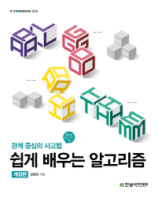
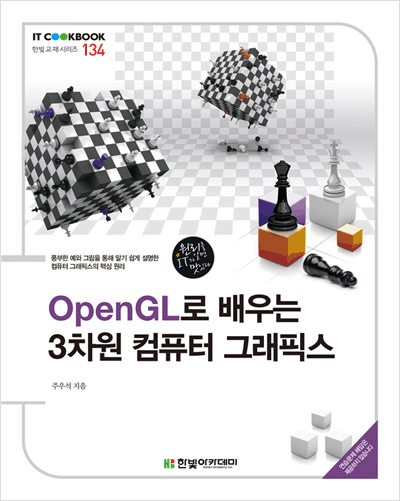

학기 목표
-
- 다양한 프로젝트 경험하기
- · 취업에 바로 뛰어들었을 때 금방 적응하기 위해서
-
- 수강하고 있는 과목 A+ 받기
- · 성적 장학금도 받고 학점도 유지하기 위해서
-
- IT 관련 국가 자격증 취득
- · 기본적인 컴활1급, 정보 처리 기사, 네트워크 관리사 ... 등등
수업 시간표
| 월 | 화 | 수 | 목 | 금 | |
|---|---|---|---|---|---|
| 9:00 ~ 9:59 | 고급 Java 프로그래밍 | 컴퓨터 그래픽스 | |||
| 10:00 ~ 10:59 | |||||
| 11:00 ~ 11:59 | |||||
| 12:00 ~ 12:59 | 노래로 보는 한국 사회 | ||||
| 13:00 ~ 13:59 | |||||
| 14:00 ~ 14:59 | |||||
| 15:00 ~ 15:59 | 알고리즘 | 알고리즘 | |||
| 16:00 ~ 16:59 | 웹 개발 입문 | 웹 개발 입문 | |||
| 17:00 ~ 17:59 | |||||
| 18:00 ~ 18:59 | 과정지도 3-1 |
수강 과목 소개
| 교재 정보 |
|---|
 |
| 명품 HTML5+CSS3+Javascript 웹 프로그래밍 |
| 생능 출판사 |
| 황기태 |
- 교과목 개요 및 학습 목표
-
- 웹 개발 입문이란 HTML을 이용하여 웹페이지를 제작하는 것은 물론 웹페이지에 들어가는 그래픽요소, 사운드, 영상 등을 웹페이지에 표현하는 것이다.
- 웹페이지 구축에 앞서 W3C와 웹표준 그리고 html5의 특징을 살펴보고 이를 바탕으로 직접 웹페이지를 구축한다.
- 수업 방법
-
- 이론 50%, 실습 50% 웹 개발 입문을 위한 기본 개념과 이에 필요한 기능들이 무엇인지 살펴본다. 실습부분은 드림위버를 이용하여 다양한 예제 중심의 실습으로 진행되며 이를 능숙하게 활용할 수 있는 적절한 과제와 발표를 통해 학생들이 충분히 이해하여 적용할 수 있게 한다.
- 교과목명: 웹 개발 입문
- 교수님: 김덕봉 교수님
- 컴퓨터공학전공 전공선택
- 교과코드: XA00015
- 자세한 문의 사항은 dbkim@skhu.ac.kr
| 교재 정보 |
|---|
 |
| 자바를 다루는 기술 |
| 길벗 |
| 김병부 |
- 교과목 개요 및 학습 목표
-
- 자바 프로그래밍의 기본 지식을 바탕으로 자바의 자료구조, 제네릭, 리플렉션 등 고급 응용 기법과 자바 오픈소스 라이브러리 학습을 통해 다양한 자바 프로젝트에 대한 실무 적응력을 향상한다.
- 수업 방법
-
- 강의 50% 실습 50% 매주 학습한 내용을 실습해 볼 수 있는 실습 예제 소스 코드가 주어지고, 학습한 내용을 활용하는 응용 과제가 주어진다. 정기적으로 퀴즈를 실시하여, 학습한 내용을 복습하고 평가한다.
- 교과목명: 고급 Java 프로그래밍
- 교수님: 홍성준 교수님
- 소프트웨어공학전공 전공선택
- 교과코드: XB00011
- 자세한 문의 사항은 sjhong@skhu.ac.kr
| 교재 정보 |
|---|
| 이지상, 사람을 노래하다 |
| 삼인 |
| 이지상 |
- 교과목 개요 및 학습 목표
-
- 사실에 근거한 역사의 이해.자신에게 음악은 무엇인가에 대한 구체적 이해.
- 굴절된 역사를 근거로한 비판적 사회인식과 대안.공동체로써의 사회에 대한 자기 정체성 확립.
- 수업 방법
-
- 주제가 정해진 2-3곡의 노래를 듣고 그 노래속에 함축된 우리사회를 함께 이야기 해본다. 주제에 맞는 전문가를 초빙하여 보다 구체적인 사회현상을 공유하고 대안을 모색 한다.
- 교과목명: 노래로 보는 한국 사회
- 교수님: 이기형 교수님
- 교양사회 교양선택
- 교과코드: AE00031
- 자세한 문의 사항은 chonchang@naver.com
| 교재 정보 |
|---|
|  |
| 쉽게 배우는 알고리즘(개정판) |
| 한빛아카데미 |
| 문병로 |
- 교과목 개요 및 학습 목표
-
- 문제를 해결하기 위한 효율적인 알고리즘을 설계하고 그 성능을 분석하는 것에 대하여 강의한다.
- 수업 방법
-
- 강의 50%, 실습 50% - 매주 학습한 내용을 실습을 통해 확인하며, 결과를 제출해야 한다.
- 매주 학습 내용을 활용하는 과제가 주어지며, 이를 해결하여 제출해야 한다.
- 각 주제마다 퀴즈를 진행한다. 이를 통해 학습한 내용을 복습하고, 알고리즘의 용어 숙지, 이론 이해 정도를 확인한다.
- 교과목명: 알고리즘
- 교수님: 노은하 교수님
- 소프트웨어공학전공 전공필수
- 교과코드: XB00007
- 자세한 문의 사항은 eunha@skhu.ac.kr
| 교재 정보 |
|---|
|  |
| OpenGL로 배우는 3차원 컴퓨터 그래픽스 |
| 한빛아카데미 |
| 주우석 |
- 교과목 개요 및 학습 목표
-
- 컴퓨터그래픽스의 핵심기술에 대해 이해하고 이를 적용하여 어플리케이션을 개발할 수 있는 능력을 배양한다.
- 수업 방법
-
- 각 주제에 대하여 강의와 시연을 통하여 주요 기술을 이해하며 주요 기술이 구현된 라이브러리의 사용법을 익힌다. 실습과 과제물을 통하여 어플리케이션 개발 능력을 배양한다.
- 문법/사용법 강의 70% 실습/과제물 30%
- 교과목명: 컴퓨터 그래픽스
- 교수님: 임충규 교수님
- 컴퓨터공학전공 전공필수
- 교과코드: XA00007
- 자세한 문의 사항은 cglim@skhu.ac.kr
나의 학습 활동 소개
- 온라인 수업으로 바뀐 생활
- 온라인 수업으로 바뀐 학습 방법
- 백준 사이트
코로나로 인해 온라인 수업을 진행하면서 저뿐만 아니라 많은 사람의 생활 패턴이 바뀌었을 것이라고 생각합니다. 심지어 온라인 수업은 처음으로 경험하고 있기 때문에 어떻게 대처해야하는지도 모릅니다.
여러 가지 바뀐 점이 있지만 그 중 첫번째로 수면 시간이 바뀌었습니다. 평소 같이 개강을 했다면 다음 날 수업을 위해 일찍 잤겠지만, 다음 날에 일찍 일어날 필요가 없기 때문에 과제하거나 놀다보니 새벽 늦게 자거나
친구들과 놀다가 밤을 새우는 경우가 자자했습니다. 그래서 수면 시간이 많이 늦춰졌고 건강이 악화된 것 같은 느낌이 들었습니다.
코로나 바이러스 때문에 원래 학습 방법을 할 수 없어 많은 피해를 보고 있습니다. 저는 평상시에 학교 수업이 끝난 후 저녁에 학교 중앙 도서관에 가서 공부를 합니다. 하지만 온라인 수업을 진행하면서 학교에 갈 일도 없고 코로나 바이러스가 심해지면서
학교 중앙 도서관뿐만 아니라 동네에 있는 도서관도 문을 닫았기 때문에 평소처럼 학습할 수 없어 많은 어려움을 겪었습니다.
그래도 온라인 수업을 한 달 동안 해보니 효율적인 학습법은 아니지만 저만의 학습 방법을 익힐 수 있었습니다. 그 이유는 평일에 여유 시간이 많이 생겼기 때문이라고 생각합니다. 노는 시간도 많아졌지만, 그만큼 학습 할 수 있는 시간도 많아졌기 때문에
온라인 강의를 다 들은 후에 집중력을 유지하면서 집중력이 끊기 때까지 공부를 합니다.
온라인 수업으로 인해 컴퓨터 또는 노트북 앞에 앉아 있을 시간이 많아지다보니 자연스럽게 코딩하는 시간이 늘었습니다. 저는 과제를 다 수행하고 시간 남으면 백준 사이트(클릭 시 설명창으로)에 접속합니다.
백준 사이트란 설명 페이지에 나와 있듯이 정보 과학 알고리즘 트레이닝 사이트 중 한 개입니다. 프로그래밍 역량을 향상시키기 위해 대학교에 입학하면서 시작했고 지금까지 꾸준히 하고 있습니다. 백준 사이트에서 많은 문제를 푼 덕분에 다양한 논리를 익혔고 알고리즘에 대해 단순히 이론만 외우는게 아니라
머릿속에서 외우고 있던 알고리즘 이론을 프로그래밍 언어를 통해 직접 구현해보면서 스스로 성장할 수 있었습니다. 그리고 그룹에 참가해 그룹원들과 맞은 문제, 푼 문제 등 비교를 하면서 더욱 학구열을 불태울 수 있었습니다.
만약 백준 사이트를 이용하시는 분이 계시다면 아래에 있는 저의 백준 사이트 링크에 들어와 본인 계정과 문제 비교를 해보시기 바랍니다.
김기범님의 백준 사이트
멘토링
2학년 1학기때부터 지금까지 매학기마다 동반 멘토링, 한솥밥 등 교내 멘토링 프로그램에 멘토로 참여하고 있습니다.
주로 자바 프로그래밍, 데이터베이스 개론, 파이썬 프로그래밍, C 프로그래밍 등 후배들이 어려워할만한 프로그래밍 언어를 스터디 과목으로 선택해 멘티, 튜티에게 도움을 주고 있습니다.
멘토링을 하면서 공부했던 과목을 다시 보니 더욱 상기되고 저 스스로 멘티에게 쉽게 설명할 수 있는 방법을 연구하는 제 모습을 볼 수 있었습니다.
그리고 선후배 간 사이가 좋아서 사회성도 기를 수 있고 스터디 지원금으로 다같이 맛있는 걸 사먹거나 놀러다닙니다.
간략한 교내 프로그램 소개
-
동반 멘토링
- 멘토:
-
- 멘티와 같은 소속 2~4학년 학생
- 직전 재학 학기 평균 평점 3.5 이상 취득한 학생
- 과목 지도 멘토의 경우 해당 교과목을 A0 이상 이수한 학생
- 멘티:
-
- 직전 재학 학기에 학습 부진 및 학사 경고를 받은 학생
- 전공 개설 교과목을 D+ 이하를 받고 재수강 중인 학생
- 편입생
- 만학도
-
학습 공동체 어울림
- 학습 유형:
-
- 기초역량: 대학생으로서의 기초 역량 증진을 위한 학습 활동
- 전공역량: 본인의 전공과 관련된 학습 활동
- 사회역량: 지역 사회 및 외부와 연계된 학습 활동
-
한솥밥 튜터링
- 튜터:
-
- 직전 재학 학기 평점 평균 3.0 이상인 학생
- 튜터링 과목을 A0 이상 이수한 학생
- 전공 탐색 교과목의 경우 A0 이상 이수한 학생
- 튜티:
- 해당 교과목을 수강중인 학생
아르바이트
원래는 꾸준히 아르바이트 자리가 있을 때마다 아르바이트를 하지만 현재는 아르바이트를 하고 있지 않습니다. 그런데 국가 근로생으로 선발되어 아르바이트 대신 교내 근로를 하고 있습니다.
방학 집중 근로생은 해본 적이 있지만 교내 근로생은 처음이라 아직 적응하고 있습니다. 그래도 근로를 하면서 많은 사람들이랑 어울리고 직장 생활과 비슷하게 학기를 지내다보니 사회성도 기르고 좋습니다.
평소같으면 근로생뿐만 아니라 학교 학생들도 있어야 하지만 코로나로 인해 학교가 여전히 썰렁합니다. 그래서 학생들이 없다보니 여유 시간이 많은 것 같습니다.
이번 학기에 근로생으로 일하기 전에는 빵집, 편의점, 카페, 호텔 등 다양한 아르바이트를 경험해왔으며, 코로나로 인해 여유 시간이 많아지다보니 주말 아르바이트까지 해볼까하고 고민중입니다.
깃허브
저의 기타 활동으로 위에 설명한 다양한 멘토링, 국가 근로를 빼고 IT 업계의 포트폴리오라고 할 수 있는 깃허브(클릭시 설명창으로)를 하고 있습니다.
깃허브를 처음 접하게 된 건 저의 대학 생활 중 첫 동아리였던 개발자들를 통해 알게 됐습니다. 지금부터 꾸준히 자신이 코딩한 소스 파일을 깃허브에 올리면 기록에 남아 취업할 때 도움이 된다고 선배님들께서 알려주셨습니다.
1, 2학년 때까지만 해도 '취업 걱정보단 학점 관리가 중요하지'라고 생각했는데 현재 3학년 1학기를 다니면서 곧 취업하기 위해 사회에 뛰쳐 나가야 되는데 제가 뛰어나다고 생각하지 않아 불안감에 떨고 있습니다.
그리고 깃허브에는 팔로우 기능이 있는데 깃허브를 하신다면 서로 어떤 프로그래밍을 하는지 궁금하니 알아가봅시다.
김기범님의 깃허브 홈페이지